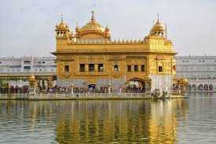
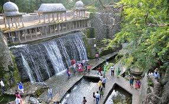
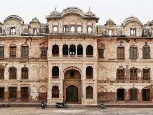
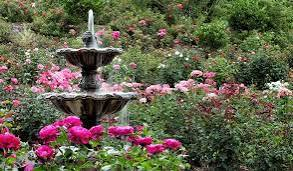
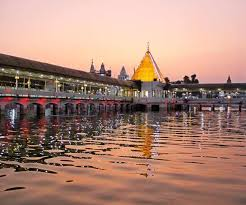
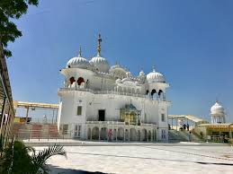
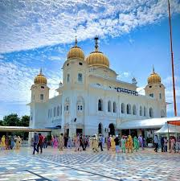

Golden Temple (Harmandir Sahib)
Holiest Gurdwara of Sikhism, known for its golden architecture and serene lake (Sarovar).

Holiest Gurdwara of Sikhism, known for its golden architecture and serene lake (Sarovar).
Memorial garden commemorating the Jallianwala Bagh massacre of 1919.
Border between India and Pakistan, famous for the Beating Retreat ceremony.
Hindu temple resembling the Golden Temple, dedicated to Goddess Durga.
Museum showcasing artifacts related to Maharaja Ranjit Singh and Sikh history.

Sculpture garden made from industrial and home waste.
Artificial lake offering boating and scenic views.
Largest rose garden in Asia, with thousands of rose varieties.

Fort and palace complex showcasing Sikh architecture and artifacts.
Palace with mirrored walls and ceilings.
Mughal-style gardens with pavilions and fountains.

Rose garden with landscaped lawns and musical fountain.
Museum showcasing agricultural innovations and rural life.

Hindu temple dedicated to Goddess Durga.
Amusement park with water rides and entertainment.

Sikh pilgrimage site, known for the Anandpur Sahib Gurudwara and historic significance.
Museum showcasing Sikh history and culture.
Historic fort with ancient artifacts and architecture.
Park with amusement rides and recreational facilities.

Sikh pilgrimage site, known for historical gurudwaras.
Archaeological site with ancient Indus Valley Civilization remains at Harappa.
Harvest festival celebrated with fervor in Punjab, especially at Anandpur Sahib.
Winter festival celebrated with bonfires, music, and dance.
Museum showcasing rural life and artifacts.
Wildlife sanctuaries offering birdwatching and nature walks.